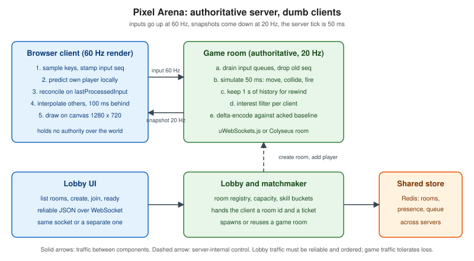

Multiplayer Game Architecture
|
This content was generated with the assistance of AI and should be verified against the official documentation before being relied on in production. |
A multiplayer game is a distributed simulation with a strict deadline: every few milliseconds each player must see a world that is close enough to everybody else’s world to feel shared, and the network offers neither bounded latency nor reliable delivery. This page lays out the architecture of Pixel Arena, the game used throughout this section: the loop that drives the simulation, the decision to let a server own the truth, the difference between how often the server simulates and how often it sends, whether to synchronise inputs or state, how snapshots are encoded and filtered, how players find each other, and which transport carries the bytes. The techniques that hide latency (prediction, reconciliation, interpolation and lag compensation) are the subject of Latency Compensation; the finished program is in Building a Multiplayer Game.
Baseline, checked on 2026-10-24: the WHATWG WebSockets standard with RFC 6455; the W3C WebRTC 1.0 Recommendation with RFC 8831 data channels; the W3C WebTransport Candidate Recommendation Snapshot of 2026-07-30 with unreliable datagrams from RFC 9221, supported in Chrome and Edge 97 and later, Firefox 114 and later and Safari 26.4 and later; uWebSockets.js v20.71.0 and Node.js 24.21.0 (the examples are plain ES modules and also run unchanged on Node.js 22). The design ideas are older than any of these APIs: they come from the networking of the first-person shooters of the 1990s and are written up by Gabriel Gambetta, in the Valve developer documentation and by Glenn Fiedler (Gaffer On Games), whose articles are cited where each idea is used. Every code listing below was executed on Node.js 24.21.0 and the numbers quoted after them are the output of those runs.
The Pixel Arena constants
Every page about Pixel Arena uses the same numbers, so that measurements on one page can be compared with another.
| Constant | Value | Why |
|---|---|---|
Arena |
1280 by 720 pixels |
Matches the canvas; also the clamp applied by the server. |
Player speed |
240 pixels per second |
12 pixels per 50 ms server tick, 4 pixels per 60 Hz render frame. |
Server tick |
20 Hz (50 ms) |
The authoritative simulation step. |
Client render and input |
60 Hz |
One input sampled per rendered frame, sent as a batch. |
Snapshot rate |
20 Hz |
One snapshot per tick. |
Input identity |
increasing 32-bit |
The snapshot carries |
Interpolation delay |
100 ms (two snapshot intervals) |
Remote players are drawn between two snapshots. |
Lag-compensation history |
1 second, rewind at most 200 ms |
Hitscan fire is validated against the past. |

The game loop and the fixed timestep
Every game, single or multiplayer, runs a loop of three steps: read input, advance the simulation, present the result.
On the client the loop is driven by the display: requestAnimationFrame calls the page once per refresh, usually 60
times a second but 30, 120 or 144 on other hardware, and with irregular gaps whenever the tab is busy or hidden. On the
server there is no display and the loop is driven by a timer. Both loops have the same problem: the time that passed
between two iterations is not constant, and a simulation that multiplies velocity by the elapsed time of each
iteration (a variable timestep) produces slightly different results on every machine and every run.
That matters in a multiplayer game for a precise reason. The server and the client both run the movement code (the client to predict its own player, the server to decide the truth), and prediction only works if the two evaluate the same input to the same position. A fixed timestep removes the dependence on the wall clock: the simulation always advances by the same quantum (50 ms for Pixel Arena’s server), and the loop’s only job is to decide how many quanta are owed. The standard way to do that is an accumulator: add the elapsed real time to a pool, run one fixed step for every full quantum in the pool, keep the remainder for the next iteration, and optionally use the remainder as an interpolation factor when drawing. Gaffer On Games describes the technique and its failure mode, the "spiral of death", where a step that takes longer to compute than it simulates makes the pool grow without bound. The guard is a cap on the steps per wake-up, after which the backlog is dropped and the game slows down instead of freezing.
// fixed-timestep.mjs -- Pixel Arena server loop: simulation at 20 Hz, independent of wall-clock jitter
const TICK_RATE = 20;
const DT = 1000 / TICK_RATE; // 50 ms
const SPEED = 240; // px per second
const MAX_CATCH_UP = 5; // never simulate more than 5 ticks per wake-up
export function createLoop(step, start = performance.now()) {
let last = start;
let acc = 0;
let tick = 0;
return function frame(now = performance.now()) {
acc += now - last;
last = now;
let steps = 0;
while (acc >= DT && steps < MAX_CATCH_UP) {
step(++tick, DT / 1000);
acc -= DT;
steps++;
}
if (steps === MAX_CATCH_UP) acc = 0; // spiral of death guard: drop the backlog
return { tick, alpha: acc / DT };
};
}
// Deterministic demonstration: feed uneven wake-up times, count ticks.
const player = { x: 0, vx: SPEED };
const frame = createLoop((tick, dt) => { player.x += player.vx * dt; }, 0);
let t = 0;
const wakeUps = [];
for (let i = 0; i < 1000; i++) wakeUps.push(1 + ((i * 37) % 40)); // 1..40 ms, uneven
let last = 0;
for (const w of wakeUps) { t += w; last = frame(t).tick; }
console.log("simulated wall time ms:", t);
console.log("ticks run:", last, "expected:", Math.floor(t / DT));
console.log("x after run:", player.x.toFixed(1), "expected:", (last * DT / 1000 * SPEED).toFixed(1));
// Real timer: one second of setInterval(…, 5) with the same loop
const real = { n: 0 };
const f2 = createLoop(() => real.n++);
const started = performance.now();
const h = setInterval(() => {
f2();
if (performance.now() - started >= 1000) { clearInterval(h); console.log("real 1 s run, ticks:", real.n); }
}, 5);The first run feeds 1000 wake-ups of uneven length (1 to 40 ms, 20,500 ms in total) into the loop. It ran 410 ticks, which
is exactly floor(20500 / 50), and moved the player 4,920 pixels, exactly 410 ticks of 12 pixels: the result depends
on the simulated time, not on how the wake-ups were distributed. The second run uses a real setInterval of 5 ms for one
second and ran 20 ticks. A real setInterval drifts and coalesces under load, which is why production servers use the
accumulator even when their timer is nominally exact, and why the loop returns alpha, the fraction of a tick left in the
pool: a client that renders at 60 Hz draws the world at previous + (current - previous) * alpha so that motion is smooth
between ticks.
The browser half is the mirror image. A client renders from requestAnimationFrame and has two timelines to manage: the
render time (every frame, 60 Hz) and the network time (a snapshot every 50 ms). The classic client loop therefore samples
input and sends it every frame, predicts the local player with the same fixed step the server uses, and draws remote
players from a buffer of snapshots, as detailed in Latency Compensation.
MDN’s article on the anatomy of a video game covers the browser side of the loop, including why requestAnimationFrame is
preferred to setInterval for rendering.
Source: MDN: Anatomy of a video game
A server loop built on setInterval has one more pitfall in Node.js: the event loop is shared with every socket and every
timer, so a garbage collection pause or a long synchronous handler delays the tick. Keep the tick handler short, do not
allocate large objects per tick, and monitor tick duration as a metric (see
Observability and
Load Testing and Capacity Planning).
Client-server or peer-to-peer, and why the server is authoritative
Three arrangements exist for deciding what happens in a shared world.
-
Peer-to-peer lockstep. Every peer runs the same deterministic simulation and the peers exchange only inputs; a tick advances when the inputs of all peers for that tick have arrived. Bandwidth is tiny (inputs only), which is why real-time strategy games with thousands of units used it. The costs are that the simulation must be bit-for-bit deterministic on every machine (floating-point behaviour, iteration order and random numbers all become hazards), that the slowest peer stalls everyone, that late joins need a full state transfer, and that every peer sees everything, so a modified client can reveal hidden information. Gaffer On Games explains the technique in the article on deterministic lockstep.
-
Peer-to-peer with a host. One player’s machine acts as the server. It saves hosting cost but gives that player zero latency and total control, which no other player can verify.
-
Client-server with an authoritative server. Clients send intentions (inputs), the server runs the simulation, decides the outcome and sends the world back. The server’s state is the only state that counts.
Pixel Arena uses the third. The reason is not performance, it is cheating. Gambetta’s introduction to client-server game architecture states the principle: players cannot be trusted, a competitive game attracts cheaters, and a cheater harms every other player, so the only safe design is one in which the client has no authority over the world. A modified client can lie about anything it controls (its position, its health, its ammunition, the time of its shot) and can read anything it receives (the position of players behind a wall). An authoritative server turns the first problem into input validation and the second into a question of what to send: if the server never sends an enemy’s position to a client that cannot see it (see interest management below), no hack can display it.
// authority.mjs -- the server applies inputs, never positions: a cheating client cannot teleport
const W = 1280, H = 720, SPEED = 240, TICK_DT = 1 / 20;
const MAX_INPUTS_PER_TICK = 6; // 60 Hz client => about 3 per 50 ms tick, allow burst
class Player {
constructor(id) { this.id = id; this.x = W / 2; this.y = H / 2; this.lastReceivedInput = 0; this.lastProcessedInput = 0; this.queue = []; }
}
export function receiveInput(player, msg) {
// msg: { seq: u32, dx: -1|0|1, dy: -1|0|1 }
if (!Number.isInteger(msg.seq) || msg.seq <= player.lastReceivedInput) return false; // replay or old
if (![-1, 0, 1].includes(msg.dx) || ![-1, 0, 1].includes(msg.dy)) return false; // malformed
if (player.queue.length >= 60) return false; // flood guard
player.lastReceivedInput = msg.seq;
player.queue.push(msg);
return true;
}
export function tick(players) {
for (const p of players) {
const batch = p.queue.splice(0, MAX_INPUTS_PER_TICK);
const perInput = TICK_DT / Math.max(batch.length, 1); // spread one tick of movement over the inputs
for (const i of batch) {
const len = Math.hypot(i.dx, i.dy) || 1; // normalise diagonals
p.x = Math.min(W, Math.max(0, p.x + (i.dx / len) * SPEED * perInput));
p.y = Math.min(H, Math.max(0, p.y + (i.dy / len) * SPEED * perInput));
p.lastProcessedInput = i.seq;
}
}
}
const a = new Player(1);
let seq = 0;
console.log("honest inputs accepted:", [1, 2, 3].map(() => receiveInput(a, { seq: ++seq, dx: 1, dy: 0 })).join(","));
console.log("replayed seq 2 accepted:", receiveInput(a, { seq: 2, dx: 1, dy: 0 }));
console.log("speed hack dx=50 accepted:", receiveInput(a, { seq: 4, dx: 50, dy: 0 }));
console.log("teleport message { x: 0, y: 0 } accepted:", receiveInput(a, { seq: 5, x: 0, y: 0 }));
const x0 = a.x;
tick([a]);
console.log("moved px in one 50 ms tick:", (a.x - x0).toFixed(2), "max allowed:", (SPEED * TICK_DT).toFixed(2));
console.log("lastProcessedInput:", a.lastProcessedInput);
for (let n = 0; n < 200; n++) { receiveInput(a, { seq: 100 + n, dx: 1, dy: 0 }); tick([a]); }
console.log("after 200 ticks x clamped to arena:", a.x);The listing shows the shape of an authoritative input path. The client can only send { seq, dx, dy }, with each axis
-1, 0 or 1. A replayed or old seq, a malformed axis such as the dx of 50 that would multiply the speed, and a message
that tries to assign a position are all rejected; a flood of input is bounded by a queue limit. The speed, the arena
bounds and the diagonal normalisation live only on the server, so one tick moves a player exactly 12 pixels, the
maximum that 240 pixels per second allows, and after 200 ticks of walking right the position is clamped to the arena width
of 1280. Notice what the server still cannot do: it cannot tell a human from an aim-bot that sends legal inputs. Input
validation stops teleporting and speed hacks; behavioural cheats need server-side detection, rate limits and, in the end,
moderation.
The price of authority is latency: with a naive implementation a key press has to cross the network and come back before the
player sees any effect. That is what client-side prediction, reconciliation and interpolation fix, without giving up
authority; the server remains the judge and the client only guesses ahead. The sequence number in every input is what makes
this possible: the server answers with lastProcessedInput, and the client discards the inputs the server has already
applied and replays the others on top of the authoritative position. The details, with runnable code and toggles, are on
Latency Compensation.
Peer-to-peer is not out of the picture on the web. WebRTC data channels connect two browsers directly, and a host-authoritative design where one browser runs the simulation and relays state to the others is possible. It is used for casual, cooperative or privacy-friendly games where cheating does not matter and where server cost is the constraint. It needs STUN and TURN for connectivity (see ICE, STUN and TURN), it scales as a mesh (see Topologies: Mesh, SFU and MCU) and it does not solve cheating, because the host is a player.
Tick rate and send rate
Two rates are easy to confuse. The tick rate is how often the server advances the simulation. The send rate (the update rate) is how often it transmits state to each client. They are independent: Valve’s networking documentation distinguishes the server’s tick interval from the rate at which snapshots are sent and the rate at which clients send their input commands, and lets the send rate be a divisor of the tick rate.
| Rate | Pixel Arena | Trade-off |
|---|---|---|
Client render |
60 Hz |
Display-bound. Rendering faster than the display refresh costs battery for no gain. |
Client input send |
60 Hz (batched) |
One input per frame keeps movement resolution fine. Sending each in its own packet costs 60 packets per second; the client batches the inputs of a short window into one message. |
Server tick |
20 Hz |
Bounds CPU per room. A higher tick rate gives finer hit registration and lower input-to-effect latency but multiplies CPU, and both cost and bandwidth. |
Snapshot send |
20 Hz |
Bandwidth scales with players times rate. Equal to the tick rate here, so each tick produces one snapshot. |
A lower send rate than tick rate saves bandwidth at the price of staleness; a higher send rate than tick rate makes no sense, because there would be nothing new to send. The relation to interpolation delay is direct: with 20 snapshots per second, 100 ms buffers exactly two snapshots, which is the minimum that lets the client interpolate between two known points even when one snapshot is late. If you raise the send rate to 30 Hz you can lower the delay to about 66 ms; if packets are lost you must raise it. The delay is the cost of smoothness: remote players are always drawn about 100 ms in the past, which is why lag compensation exists on the server (see Latency Compensation).
Also keep the bandwidth budget in view. At 20 snapshots per second to each client, a payload of 453 bytes as JSON (the average of the measurement below for eight players) is about 9 kilobytes per second per client, and with 100 clients in the same room, 900 kilobytes per second of outgoing traffic from one process, before any framing overhead. The next sections show how to bring this down by an order of magnitude.
Input synchronisation versus state synchronisation
There are two things a client can receive: the inputs of the other players, or the resulting state of the world.
Input synchronisation (lockstep, covered above) sends the smallest possible data and requires determinism, which a browser cannot guarantee across engines and CPU architectures for floating-point-heavy code, and which fails catastrophically (a desynchronisation) rather than gracefully. It suits turn-based and some strategy games.
State synchronisation sends the positions, orientations and health of entities. It tolerates non-determinism, since the next snapshot corrects any error; it tolerates packet loss, because a lost snapshot is replaced by the next; it lets a late joiner start from the current snapshot; and it allows the server to decide what each client sees. It costs bandwidth, which is why snapshot compression and interest management exist. Gaffer On Games compares the two approaches and the hybrid of sending state for the objects that matter plus inputs for the owner, in its articles on state synchronisation.
Pixel Arena uses both in the hybrid shape used by action games: clients send inputs, the server sends state. Inputs are
small, ordered by seq and applied by the server; state is a snapshot of players, bullets and scores. The client keeps its own
history of unacknowledged inputs for prediction. This is the architecture of the Source engine documentation and of the
Gambetta series.
Snapshots, baselines and delta compression
A snapshot is the server’s serialisation of everything a client needs to draw one tick: the tick number, each visible player’s
position, angle and health, and the lastProcessedInput of the receiving player. It is tagged with the tick so that clients
interpolate by simulation time and discard anything older than the newest one they have already applied.
A snapshot of every field of every entity, every tick, wastes bandwidth because most fields do not change most of the time. The remedy is delta compression: send only what changed since a baseline, a snapshot the client is known to have. The baseline is established by acknowledgement: the client reports the newest tick it received and the server uses it as the reference for the next delta; if the client falls behind or packets are lost, the server simply keeps using the old acknowledged baseline, and if no baseline is available it sends a full snapshot. This is the same scheme as the Source engine’s, which sends changes relative to the last acknowledged snapshot and falls back to a full update. Gaffer On Games describes the encoding in detail, with quantisation of values to fixed-point integers (positions in 1/16 of a pixel here, angles in 1/10000 of a radian), per-field change bits and bit packing.
The listing implements the encoding with a one-byte change mask per player and fixed-point fields, and measures it against JSON
for a scenario of eight players, three moving and five standing still, over 100 ticks, with an acknowledged baseline refreshed
every tenth tick. See Buffers and Binary Data for the Buffer API used here.
// delta.mjs -- binary snapshot with per-player delta against the last acknowledged baseline
const FIELDS = ["x", "y", "angle", "hp"]; // bit 0..3
const SCALE = { x: 16, y: 16, angle: 10000, hp: 1 }; // fixed-point
function quant(p) {
return { id: p.id, x: Math.round(p.x * SCALE.x), y: Math.round(p.y * SCALE.y),
angle: Math.round(p.angle * SCALE.angle), hp: p.hp };
}
// Layout: u8 type=2, u32 tick, u32 baselineTick (0 = full), u8 count,
// then per player: u8 id, u8 mask, then the changed fields (i32 x, i32 y, i16 angle, u8 hp)
export function encode(tick, baselineTick, players, baseline) {
const sizes = { x: 4, y: 4, angle: 2, hp: 1 };
const parts = [];
let len = 1 + 4 + 4 + 1;
for (const p of players) {
const q = quant(p);
const b = baseline?.get(p.id);
let mask = 0;
FIELDS.forEach((f, i) => { if (!b || b[f] !== q[f]) mask |= 1 << i; });
parts.push({ q, mask });
len += 2 + FIELDS.reduce((n, f, i) => n + (mask & (1 << i) ? sizes[f] : 0), 0);
}
const buf = Buffer.alloc(len);
let o = 0;
o = buf.writeUInt8(2, o); o = buf.writeUInt32LE(tick, o); o = buf.writeUInt32LE(baselineTick, o);
o = buf.writeUInt8(players.length, o);
for (const { q, mask } of parts) {
o = buf.writeUInt8(q.id, o); o = buf.writeUInt8(mask, o);
if (mask & 1) o = buf.writeInt32LE(q.x, o);
if (mask & 2) o = buf.writeInt32LE(q.y, o);
if (mask & 4) o = buf.writeInt16LE(q.angle, o);
if (mask & 8) o = buf.writeUInt8(q.hp, o);
}
return buf;
}
export function decode(buf, baseline) {
let o = 1;
const tick = buf.readUInt32LE(o); o += 4;
const baselineTick = buf.readUInt32LE(o); o += 4;
const count = buf.readUInt8(o); o += 1;
const out = new Map();
for (let i = 0; i < count; i++) {
const id = buf.readUInt8(o++); const mask = buf.readUInt8(o++);
const q = { ...(baseline?.get(id) ?? { id, x: 0, y: 0, angle: 0, hp: 0 }), id };
if (mask & 1) { q.x = buf.readInt32LE(o); o += 4; }
if (mask & 2) { q.y = buf.readInt32LE(o); o += 4; }
if (mask & 4) { q.angle = buf.readInt16LE(o); o += 2; }
if (mask & 8) { q.hp = buf.readUInt8(o); o += 1; }
out.set(id, q);
}
return { tick, baselineTick, players: out };
}
// Simulation: 8 players, 3 moving, 5 standing; 100 ticks
const players = Array.from({ length: 8 }, (_, i) => ({ id: i + 1, x: 100 + i * 120, y: 300, angle: 0, hp: 100 }));
let baseline = null, baselineTick = 0;
let jsonTotal = 0, fullTotal = 0, deltaTotal = 0;
let clientState = null;
for (let tick = 1; tick <= 100; tick++) {
for (const p of players.slice(0, 3)) { p.x += 4.8 * (p.id % 2 ? 1 : -1); p.angle = (p.angle + 0.03) % 6.28; }
if (tick === 60) players[4].hp = 70;
jsonTotal += Buffer.byteLength(JSON.stringify({ t: tick, p: players }));
fullTotal += encode(tick, 0, players, null).length;
const d = encode(tick, baselineTick, players, baseline);
deltaTotal += d.length;
const dec = decode(d, clientState && baselineTick ? baseline : null);
clientState = dec.players;
if (tick % 10 === 0) { baseline = new Map(players.map(p => [p.id, quant(p)])); baselineTick = tick; } // ack arrives
if (tick === 100) {
const ok = players.every(p => { const q = quant(p), c = dec.players.get(p.id); return FIELDS.every(f => q[f] === c[f]); });
console.log("last snapshot reconstructed exactly:", ok);
}
}
console.log("JSON bytes total :", jsonTotal, "avg", (jsonTotal / 100).toFixed(1));
console.log("binary full total :", fullTotal, "avg", (fullTotal / 100).toFixed(1));
console.log("binary delta total:", deltaTotal, "avg", (deltaTotal / 100).toFixed(1));
console.log("delta / JSON:", (deltaTotal / jsonTotal * 100).toFixed(1) + "%");The run printed the following. The last snapshot decoded to the exact fixed-point state of the server, which is what makes delta decoding safe to rely on.
last snapshot reconstructed exactly: true
JSON bytes total : 45328 avg 453.3
binary full total : 11400 avg 114.0
binary delta total: 5101 avg 51.0
delta / JSON: 11.3%The binary full snapshot (114 bytes per tick) is already about a quarter of the JSON size (453 bytes), because numbers cost two to four bytes instead of up to a dozen characters and field names cost nothing. Delta compression halves it again, to 51 bytes, which at 20 Hz is about one kilobyte per second per client, about 11 percent of the JSON figure. The saving grows with the fraction of entities that stand still and shrinks in a fight where everyone moves and turns. Production encoders go further with bit packing, variable-length integers and delta against the previous value, and Colyseus ships a schema-based encoder that does the per-field diffing automatically (see Game Servers and Colyseus).
Three details decide whether delta compression is robust.
-
Unreliable transport. A delta is only meaningful against a baseline the client actually has, so the client must acknowledge ticks. With a reliable, ordered transport such as a WebSocket every packet arrives, but they may be late, so the same acknowledgement scheme still keeps the server from depending on a snapshot the client discarded.
-
Entities that appear and disappear. The listing sends a full record when an id is not in the baseline. Deleting an entity needs an explicit removal message or a list of ids, which interest management produces naturally (see next section).
-
Messages and limits. The WebSocket frames used here are binary (opcode 2; see The WebSocket Protocol). A uWebSockets.js server closes a socket that sends a message larger than its
maxPayloadLength(16 KB by default), so check the limit for input batches and large snapshots, and see Message Design and Serialization for the JSON envelope used by Chatterbox, which Pixel Arena does not use for its high-rate traffic: only lobby and control messages use JSON.
Interest management
With 200 players in a 1280 by 720 arena, sending every player the whole world costs 200 entity records per client per tick, 40,000 per tick, and the work grows with the square of the player count. Interest management (also called area of interest or relevance filtering) sends each client only the entities it needs: those within a view radius, in its team or room, or on the screen plus a margin. It cuts bandwidth and, with the right rules, closes the information leaks of wall-hacks and map-hacks, because information that is never sent cannot be displayed.
The usual implementation keeps a spatial index, here a uniform grid with cells slightly larger than the view radius over two, and queries the cells around each client. The listing below uses a 160-pixel grid and a 400-pixel radius.
// interest.mjs -- grid-based interest management for Pixel Arena (1280x720, 200 players)
const W = 1280, H = 720, CELL = 160, VIEW = 400; // view radius in px
class Grid {
constructor() { this.cells = new Map(); }
key(cx, cy) { return cx * 1000 + cy; }
rebuild(players) {
this.cells.clear();
for (const p of players) {
const k = this.key(Math.floor(p.x / CELL), Math.floor(p.y / CELL));
(this.cells.get(k) ?? this.cells.set(k, []).get(k)).push(p);
}
}
near(p, r) {
const out = [], r2 = r * r, span = Math.ceil(r / CELL);
const cx = Math.floor(p.x / CELL), cy = Math.floor(p.y / CELL);
for (let i = cx - span; i <= cx + span; i++) for (let j = cy - span; j <= cy + span; j++) {
for (const o of this.cells.get(this.key(i, j)) ?? []) {
const dx = o.x - p.x, dy = o.y - p.y;
if (dx * dx + dy * dy <= r2) out.push(o);
}
}
return out;
}
}
let seed = 42; const rnd = () => (seed = (seed * 1664525 + 1013904223) >>> 0) / 2 ** 32;
const players = Array.from({ length: 200 }, (_, i) => ({ id: i + 1, x: rnd() * W, y: rnd() * H }));
const grid = new Grid();
let t0 = performance.now();
grid.rebuild(players);
let sum = 0, max = 0;
const visible = new Map();
for (const p of players) { const v = grid.near(p, VIEW); visible.set(p.id, v); sum += v.length; max = Math.max(max, v.length); }
const ms = performance.now() - t0;
// brute force check
let mismatch = 0;
for (const p of players) {
const bf = players.filter(o => (o.x - p.x) ** 2 + (o.y - p.y) ** 2 <= VIEW * VIEW).length;
if (bf !== visible.get(p.id).length) mismatch++;
}
console.log("players:", players.length, "view radius:", VIEW);
console.log("avg visible per client:", (sum / players.length).toFixed(1), "max:", max, "(without filtering: 200)");
console.log("grid result differs from brute force for", mismatch, "clients");
console.log("rebuild + 200 queries ms:", ms.toFixed(2));
console.log("entity records per tick: filtered", sum, "vs unfiltered", 200 * 200, "=>", (sum / 40000 * 100).toFixed(1) + "%");The run, with a fixed seed, produced:
players: 200 view radius: 400
avg visible per client: 71.9 max: 110 (without filtering: 200)
grid result differs from brute force for 0 clients
rebuild + 200 queries ms: 1.15
entity records per tick: filtered 14376 vs unfiltered 40000 => 35.9%The grid agrees with a brute-force check for every client, filtering cuts the entity records sent per tick to about 36 percent in this dense arena (a larger map with the same player count would save much more), and rebuilding the grid and answering 200 queries cost about a millisecond, a small part of the 50 ms tick budget (the first call also pays JIT warm-up, so repeated ticks are faster).
Two cautions apply. First, objects leaving the radius must be removed on the client, so the delta encoder needs removal records and the baseline must be per client, which is the one cost of combining the two techniques: the server keeps a baseline per client, not one shared snapshot. Second, interest management interacts with interpolation: an entity entering the radius appears at its current position with no history, so clients should fade it in or hold the first snapshot until a second arrives.
For very large worlds, interest management becomes sharding: the world is divided into regions, each simulated by a different process, and players move between them. That is beyond Pixel Arena, which keeps eight to a few dozen players per room and scales by running more rooms (see Scaling WebSockets).
Lobbies, matchmaking and rooms
Before the first tick, players must find each other. Three concepts are separate and are often conflated.
-
A room (match, session, instance) is a running simulation with a fixed capacity, a lifecycle (waiting, playing, finished) and its own loop. All of the tick loop’s state lives in one room and one process, so a room never needs a distributed lock.
-
A lobby is the place before a match: a list of rooms to join, a ready check, chat and settings. It is reliable, low-rate, request and response traffic, so Pixel Arena uses JSON over a WebSocket for it, with the Chatterbox envelope of Message Design and Serialization.
-
Matchmaking assigns players to rooms automatically: it queues players, groups them by a rule such as skill rating or latency region, creates or fills a room and hands every player a room id and a credential to join it.
The listing is a small in-memory registry and matchmaker. It enforces the capacity and the lifecycle, issues a one-time ticket per join, and groups players by skill bucket, widening the search by one bucket for every ten seconds a player has waited so that nobody waits forever.
// lobby.mjs -- in-memory room registry and a simple skill-bucket matchmaker for Pixel Arena
import { randomBytes } from "node:crypto";
const MAX_PLAYERS = 8;
const BUCKET = 200; // rating points per matchmaking bucket
export class Lobby {
rooms = new Map(); // roomId -> { id, players: Map, state, bucket }
queue = []; // { playerId, rating, since }
createRoom(bucket = 0) {
const id = "arena-" + randomBytes(3).toString("hex");
const room = { id, bucket, state: "waiting", players: new Map() };
this.rooms.set(id, room);
return room;
}
join(roomId, playerId) {
const room = this.rooms.get(roomId);
if (!room) throw new Error("no_such_room");
if (room.state !== "waiting") throw new Error("room_started");
if (room.players.size >= MAX_PLAYERS) throw new Error("room_full");
room.players.set(playerId, { ready: false });
// a one-time ticket the game socket presents instead of a long-lived token
return { roomId, ticket: randomBytes(16).toString("base64url") };
}
ready(roomId, playerId) {
const room = this.rooms.get(roomId);
room.players.get(playerId).ready = true;
if (room.players.size >= 2 && [...room.players.values()].every(p => p.ready)) room.state = "playing";
return room.state;
}
enqueue(playerId, rating, now = Date.now()) {
this.queue.push({ playerId, rating, since: now });
return this.#match(now);
}
// Match players whose rating bucket is the same, widening by one bucket per 10 s waited.
#match(now) {
for (const a of this.queue) {
const widen = Math.floor((now - a.since) / 10_000);
const mates = this.queue.filter(b => b !== a &&
Math.abs(Math.floor(a.rating / BUCKET) - Math.floor(b.rating / BUCKET)) <= widen);
if (mates.length >= 1) {
const group = [a, ...mates.slice(0, MAX_PLAYERS - 1)];
this.queue = this.queue.filter(q => !group.includes(q));
const room = this.createRoom(Math.floor(a.rating / BUCKET));
return { room, tickets: group.map(g => ({ playerId: g.playerId, ...this.join(room.id, g.playerId) })) };
}
}
return null;
}
}
// demo
const lobby = new Lobby();
const r = lobby.createRoom();
console.log("room", r.id.startsWith("arena-"), "ticket length", lobby.join(r.id, "p1").ticket.length);
lobby.join(r.id, "p2");
console.log("state after p1 ready:", lobby.ready(r.id, "p1"), "after p2 ready:", lobby.ready(r.id, "p2"));
try { lobby.join(r.id, "p3"); } catch (e) { console.log("late join:", e.message); }
console.log("match alone:", lobby.enqueue("a", 1010, 0));
console.log("far rating, no wait:", lobby.enqueue("b", 1650, 1000) === null ? "no match" : "match");
const m = lobby.enqueue("c", 1050, 2000);
console.log("close rating match:", m && m.tickets.map(t => t.playerId).join(","), "bucket", m && m.room.bucket);
const m2 = lobby.enqueue("d", 1300, 25_000);
console.log("after 25 s wait:", m2 && m2.tickets.map(t => t.playerId).join(","));
for (let i = 0; i < 8; i++) { const rr = lobby.createRoom(); for (let j = 0; j < 8; j++) lobby.join(rr.id, "x" + j); try { lobby.join(rr.id, "y"); } catch (e) { if (i === 0) console.log("ninth player:", e.message); } }The run printed playing only after both players were ready, room_started for a late join, room_full for the ninth player,
no match for a lone player or for ratings of 1010 and 1650 queued within a second of each other, a match of the players rated 1010 and 1050
(same bucket, 5), and, after a long wait, a match across buckets. A real matchmaker adds latency measurement (a ping to each
region), party handling and backfill (filling the empty slots of a running room), and keeps its queue in a shared store such as
Redis (see Redis Reference) so that any server process can answer; the room registry lives there too, with
a heartbeat that removes dead rooms.
The ticket is the link between the lobby and the game. The lobby is authenticated with the site’s session; the game socket
usually opens on another host and path, so it presents a short-lived, single-use ticket in the first message or in the query string.
That avoids long-lived credentials in URLs and logs, and it lets the game server verify that this player was admitted to this room.
See Authentication and Authorization for the options. Whatever
the scheme, the game server must also allow-list the Origin of the handshake, because browsers send cookies on cross-site
WebSocket handshakes and do not apply the same-origin policy to them (see
Security).
Rooms and scaling are linked: because one room is one loop in one process, a game scales by placing rooms on processes, not by sharing a room across them. Sticky routing (the client must reach the process that hosts its room) replaces the pub/sub backplane that a chat cluster uses; see Proxies, Load Balancers and Deployment.
Choosing the transport
A game needs a channel for each of two kinds of message: reliable and ordered ones (join, leave, chat, score, round start) and loss-tolerant and latest-wins ones (inputs, snapshots). The three options available to a browser trade these differently.
| Property | WebSocket | WebRTC data channel | WebTransport datagrams |
|---|---|---|---|
Underlying transport |
TCP, optionally TLS (RFC 6455) |
SCTP over DTLS over UDP (RFC 8831) |
QUIC datagrams over HTTP/3 (RFC 9221) |
Delivery |
Reliable, ordered only |
Configurable per channel: ordered, unordered, |
Unreliable, unordered; streams are available on the same session for reliable data |
Head-of-line blocking |
Yes: one lost segment delays everything behind it |
Not on an unordered, unreliable channel |
No |
Browser support |
Everywhere |
Everywhere; Node.js servers need a library |
Chrome and Edge 97+, Firefox 114+, Safari 26.4+ |
Server effort |
Trivial, every stack in this section |
High: signalling, ICE, a native peer library |
Moderate: an HTTP/3 server; the ecosystem is young |
Firewalls |
Passes through port 443, proxies and load balancers |
Needs UDP; TURN as a fallback |
Needs UDP/443; blocked on some networks |
Backpressure |
|
|
Stream-based; datagram queues are bounded |
Maturity |
Standard since 2011 |
Standard, widely deployed |
Emerging |
TCP’s guarantee is the problem. When a segment is lost, TCP holds every later byte until the retransmission arrives, so one lost packet freezes the whole stream for a round trip or more, and the data it delays (an old position) is already obsolete. On a clean wired connection a WebSocket is fine; on lossy Wi-Fi and mobile networks the effect is visible as periodic stalls. Gaffer On Games recommends UDP for fast-paced games for this reason, and Valve’s documentation describes a UDP-based design. In the browser the choice is therefore:
-
WebSocket first. It works everywhere, passes every proxy and is the simplest to operate and test, so Pixel Arena starts with it. Cheap mitigations help: keep messages small (the delta snapshots above), skip sending when
bufferedAmountis high (never queue stale snapshots behind a slow socket) and make sure the server socket has Nagle’s algorithm disabled. -
An unreliable data channel when you need to remove head-of-line blocking today, on all browsers. It pays with signalling, a native WebRTC peer on the server (node-datachannel, geckos.io, Pion or aiortc) and TURN for firewalls. See Data Channels for the channel options and a server peer, and Building a Multiplayer Game for the Pixel Arena variant.
-
WebTransport datagrams is the cleaner future: one HTTP/3 connection, no signalling dance, unreliable datagrams next to reliable streams for control messages. It is supported by all three browser engines as of Safari 26.4, but servers and proxies are less mature and the specification is still a Candidate Recommendation Snapshot, so treat it as an optional upgrade behind a fallback. See WebTransport and Media over QUIC.
Whichever you choose, send a sequence number or tick in every unreliable message, never assume order or delivery, and keep every datagram under the path MTU (about 1,200 bytes is a safe ceiling) so it is not fragmented; the delta snapshots above are far below it. The listing hides the choice behind one small interface, so game code does not know which transport it uses, and falls back to the WebSocket when WebTransport is missing or UDP is blocked.
// transport.mjs -- Pixel Arena client: pick the best available game transport, same interface for all
export async function openGameTransport(base, ticket, onMessage) {
// 1. WebTransport datagrams (HTTP/3): unreliable, no head-of-line blocking
if ("WebTransport" in globalThis) {
try {
const wt = new WebTransport(`https://${base}/arena?ticket=${ticket}`);
await wt.ready;
const writer = wt.datagrams.writable.getWriter();
(async () => {
const reader = wt.datagrams.readable.getReader();
for (;;) { const { value, done } = await reader.read(); if (done) break; onMessage(value); }
})();
return { kind: "webtransport", send: bytes => writer.write(bytes), close: () => wt.close() };
} catch { /* blocked UDP or no server support: fall through */ }
}
// 2. WebSocket: reliable and ordered, works everywhere, the baseline
const ws = new WebSocket(`wss://${base}/arena?ticket=${ticket}`);
ws.binaryType = "arraybuffer";
ws.onmessage = e => onMessage(new Uint8Array(e.data));
await new Promise((res, rej) => { ws.onopen = res; ws.onerror = () => rej(new Error("ws_failed")); });
return { kind: "websocket", send: bytes => { if (ws.bufferedAmount < 16 * 1024) ws.send(bytes); }, close: () => ws.close() };
}Source: MDN: WebTransport.datagrams
The listing was syntax-checked and its fallback executed on Node.js 24.21.0, which has no WebTransport: with no server listening it
reached the WebSocket branch and failed with ws_failed, which is the intended behaviour. The send function drops a message when bufferedAmount exceeds 16 KB: on a reliable socket, an
old snapshot is worth less than none, because delivering it late only delays the fresh one behind it.
Putting it together: what runs where
| Concern | Server (uWebSockets.js room) | Browser client |
|---|---|---|
Time |
Accumulator loop at 20 Hz, tick counter, 1 s history |
|
Input |
Validates |
Samples keys every frame, stamps |
State |
Owns all entities; sends delta snapshots filtered by interest, with |
Buffers snapshots, interpolates remote players 100 ms behind, reconciles its own player |
Rooms |
One loop per room, capacity, lifecycle; registers in Redis |
Lobby UI over a WebSocket, receives a ticket |
Transport |
WebSocket by default, optional data channel or WebTransport |
Feature-detects and falls back |
Security |
Origin allow-list, single-use ticket, input validation, rate limits |
Untrusted: nothing it sends is believed |
Common errors and pitfalls
-
Trusting the client. Accepting
{ x, y }from a client, or adtor a timestamp that scales movement, hands the game to the first player who opens the developer tools. Accept intentions, clamp and validate on the server. -
Variable timestep on the server. Different results from different loads, and a prediction that drifts from the server. Use the accumulator and a fixed step, and share the movement function between client and server.
-
No cap on catch-up. One long garbage collection pause makes the loop run hundreds of ticks back to back and freeze the process. Cap the steps and drop the backlog.
-
Sending every snapshot to every client. Quadratic bandwidth. Filter by interest and delta-encode against an acknowledged baseline.
-
Deltas against a baseline the client lost. The client shows garbage. Send full snapshots when there is no acknowledged baseline, and keep several baselines when packet loss is common.
-
JSON for high-rate state. Field names and decimal numbers dominate the payload; use a binary layout for inputs and snapshots, and keep JSON for lobby messages.
-
Queueing behind a slow socket. A phone on a poor connection receives stale snapshots seconds late. Check
bufferedAmount(or the server’s backpressure signal) and skip frames. -
Assuming the datagram arrives. On unreliable channels, every state message must be self-sufficient or acknowledged, and every message needs a tick or sequence number so old ones are dropped.
-
Long-lived tokens in the game URL. They end up in logs. Use a single-use ticket and an
Originallow-list. -
Ignoring idle rooms. A room without players must stop its loop and unregister, or the process burns CPU on empty simulations.
Security notes
Authority is the first security control, and input validation is its implementation. Beyond that: authenticate the lobby with the normal
session, give the game socket a short-lived single-use ticket, check the Origin header of the WebSocket handshake, limit message size and rate per
connection (a game client has no business sending more than the 60 inputs per second it was designed for), and never send hidden information. Interest management
is a security feature as much as a bandwidth feature. Do not put secrets in snapshots that all players in a room receive. Report only what
the receiving client is allowed to know. The general rules are on Security and
Authentication and Authorization.
Version and history notes
-
The client-server model with prediction and interpolation was developed for the 1996 to 1999 first-person shooters and is documented in the Valve developer documentation for the Source engine; the techniques have not changed, only the APIs carrying them.
-
Browser games moved from long polling to WebSocket (RFC 6455, 2011), and gained unreliable delivery with WebRTC data channels (RFC 8831, 2020) and WebTransport datagrams (RFC 9221 for QUIC datagrams; the W3C API is a Candidate Recommendation Snapshot).
-
Safari 26.4 completed WebTransport support across the three browser engines, so datagram-based game transports are now a realistic option behind a WebSocket fallback.
-
uWebSockets.js v20.71.0 is installed from a GitHub tag, not from npm; its defaults (16 KB
maxPayloadLength, 120 sidleTimeout, 64 KBmaxBackpressure, compression off) are described on uWebSockets.js.
Related pages
-
Latency Compensation for prediction, reconciliation, interpolation and lag compensation.
-
Game Servers and Colyseus for the schema-based alternative.
-
Building a Multiplayer Game for the complete Pixel Arena.
-
uWebSockets.js for the server library used for the authoritative loop.
-
The WebSocket Protocol, Data Channels and WebTransport and Media over QUIC for the three transports.
-
Choosing a WebSocket Stack for server selection.
-
Chat Architecture and Videoconference Architecture for the other two scenarios.
-
Multiplayer and Netcode for the same ideas in a Unity game, with Netcode for GameObjects.
-
Networking and Replication for the same ideas in Unreal Engine, with authority, RepNotify and RPCs.